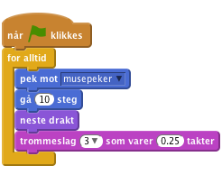
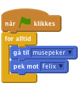
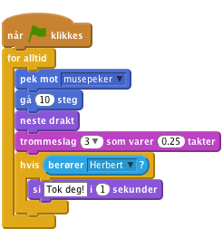
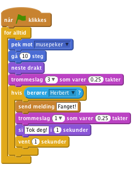
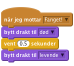
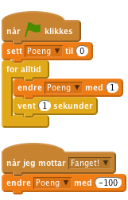

Felix og Herbert
1.1
Vi skal lage et spill hvor katten Felix skal fange musa Herbert. Du styrer Herbert med musepekeren og skal prøve å unngå å bli tatt av Felix. Jo lenger du unngår ham jo flere poeng får du, men blir du tatt, går poengsummen din ned.

| Sjekkliste | Følg instruksjonene på lista. Huk av etter hvert |
|---|---|
| Test | Klikk på det grønne flagget for å teste koden |
| Lagre | Husk å lagre koden når du har lagt til noe nytt |
Vi ønsker at katten Felix skal følge etter musepekeren.
 .
. for å importere en ferdig bakgrunn. Velg bakgrunnen 'Utendørs/brick wall2'.
for å importere en ferdig bakgrunn. Velg bakgrunnen 'Utendørs/brick wall2'. -fanen og lag dette skriptet:
-fanen og lag dette skriptet:
Klikk på det grønne flagget.
Nå ønsker vi at Felix skal jage musa Herbert i stedet for musepekeren.
 og velg figuren 'Dyr/Mouse1'..
og velg figuren 'Dyr/Mouse1'.. (øverst mot midten av vinduet). Prøv seks klikk.
(øverst mot midten av vinduet). Prøv seks klikk.
Klikk på det grønne flagget.
Vi vil at Felix skal vite når han har fanget Herbert og fortelle det til oss.

Klikk på det grønne flagget.
I stedet for at Felix sier noe, vil vi at Herbert blir forvandlet til et spøkelse når han fanges.

 -fanen. og velg 'Fantasi/ghost2-a' og trykke seks ganger på spøkelsesdrakten.
-fanen. og velg 'Fantasi/ghost2-a' og trykke seks ganger på spøkelsesdrakten.
Klikk på det grønne flagget.
La oss legge til en poengsum slik at vi kan se hvor flink man er til å holde Herbert i live. Vi begynner med poengsummen null og øker den med en for hvert sekund. Hvis Felix fanger Herbert, minker vi poengsummen med hundre.
-fanen under kategorien  , lag en ny variabel. La den gjelde for alle figurer og kall den 'Poeng'.
, lag en ny variabel. La den gjelde for alle figurer og kall den 'Poeng'.

Klikk på det grønne flagget.
Du er ferdig. Godt gjort. Nå kan du spille spillet!
Husk at du kan dele spillet med familie og venner ved å trykke 'Legg ut' på menylinjen.